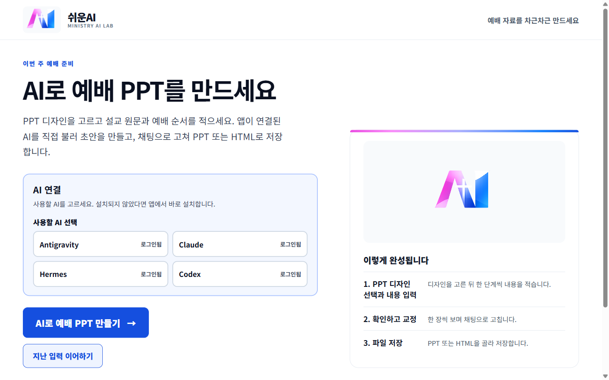
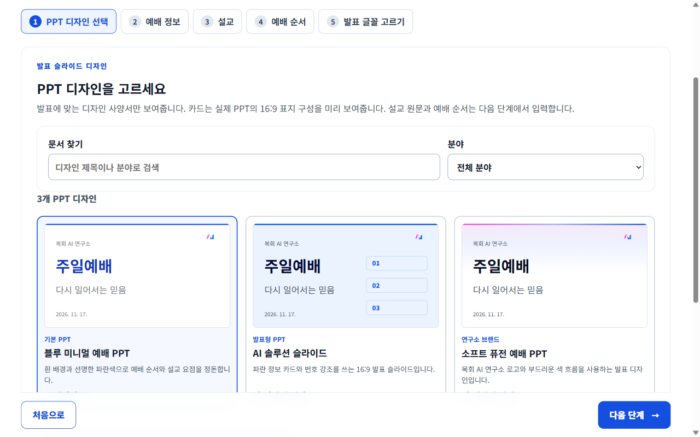
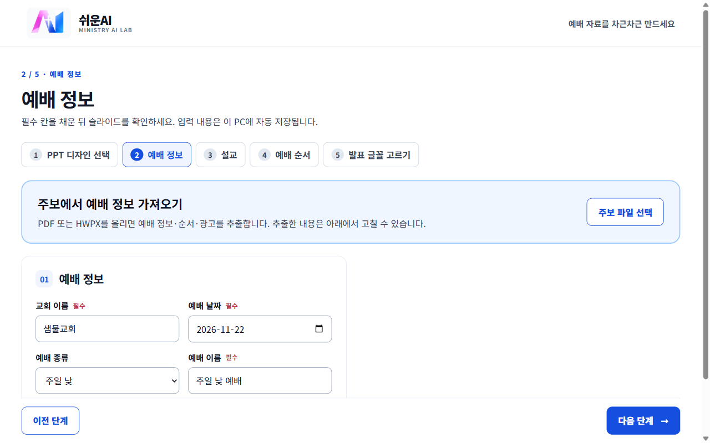
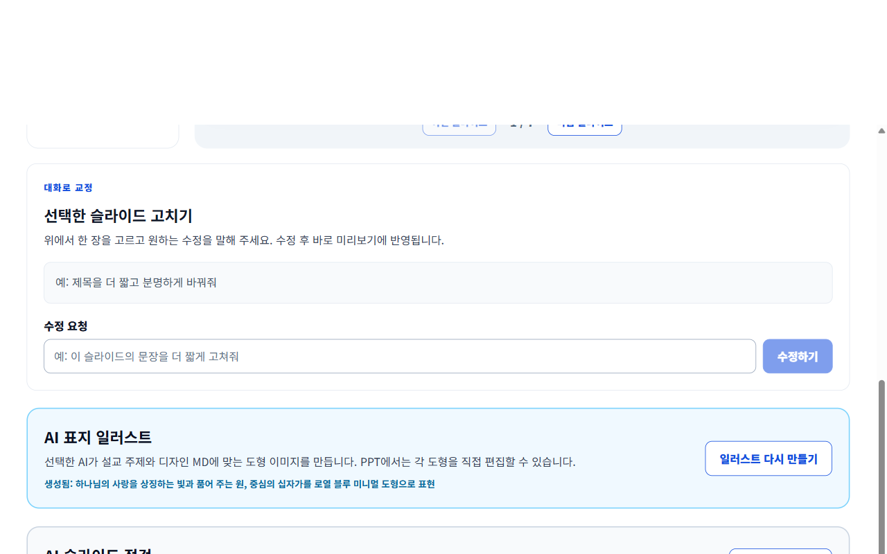

설교 원문에서 발표 요점까지
설교 원문을 그대로 넣습니다. AI가 발표에 쓸 요점을 제안하고, 근거가 된 원문 문장도 함께 확인할 수 있습니다.
예배 준비를 위한 데스크톱 앱 · v0.10.1
설교 원문을 붙여넣으면 AI가 발표할 요점을 정리합니다. 우리 교회의 실제 예배 순서를 더하고, 완성된 슬라이드를 보며 문장을 고친 뒤 편집 가능한 PPTX로 저장하세요. 주보 PDF/HWPX도 불러올 수 있습니다.

WHY EASYAI
원문 정리, 순서 반영, 문장 수정이 서로 다른 도구에 흩어지지 않도록 한 흐름으로 묶었습니다.
설교 원문을 그대로 넣습니다. AI가 발표에 쓸 요점을 제안하고, 근거가 된 원문 문장도 함께 확인할 수 있습니다.
PDF/HWPX 주보를 읽어 순서와 담당자를 채웁니다. 원본과 비교해 확인한 후 슬라이드에 반영합니다.
AI가 슬라이드 개선점을 제안합니다. 표지용 벡터 일러스트를 만들고, 필요한 문장을 한 장씩 고칩니다.
HOW IT WORKS
필요한 내용을 순서대로 입력하고 결과를 눈으로 확인합니다.
Antigravity, Claude, Hermes, Codex 중 본인이 사용하는 도구를 선택합니다. 설치되지 않았다면 앱에서 해당 도구의 공식 설치를 시작합니다.
제공된 디자인 MD 51개를 실제 16:9 슬라이드 모양으로 보고 선택합니다. 이미지와 브랜드 문서는 PPT용으로 해석합니다.
주보 PDF/HWPX를 읽거나 설교 원문과 실제 예배 순서를 입력합니다. 예배 순서는 원본을 보고 확인합니다.
연결된 AI가 요점, 일러스트, 개선점을 준비합니다. 근거를 확인하고 슬라이드를 채팅으로 고친 후 PPTX 또는 HTML로 저장합니다.
REAL APP SCREENS
Windows 앱에서 직접 캡처했습니다. 화살표를 누르면 연결부터 교정까지 순서대로 넘어갑니다. 이미지를 자르거나 목업으로 바꾸지 않았습니다.
이미 사용하는 CLI를 확인하고 앱 안에서 연결 상태를 봅니다.
원본 크기로 보기 ↗
16:9 표지 미리보기로 발표 분위기를 먼저 확인합니다.
원본 크기로 보기 ↗
교회 이름과 날짜를 입력하면 표지와 예배 자료에 반영됩니다.
원본 크기로 보기 ↗
설교 원문을 넣고 AI가 추린 발표 요점과 근거를 확인합니다.
원본 크기로 보기 ↗순서와 담당자를 확인한 뒤 슬라이드에 적용합니다.
원본 크기로 보기 ↗원문 요점을 AI로 만들고 PC 글꼴이나 올린 글꼴을 선택합니다.
원본 크기로 보기 ↗목록에서 한 장씩 선택하고 발표 화면의 구성을 살펴봅니다.
원본 크기로 보기 ↗
슬라이드 한 장을 골라 대화로 수정한 뒤 PPTX 또는 HTML로 저장합니다.
원본 크기로 보기 ↗USEFUL, WITH CLEAR LIMITS
DOWNLOAD · v0.10.1
버튼은 실제 배포 파일이 준비된 운영체제에서만 활성화됩니다. 설치 후 사용할 AI 계정에 로그인하세요.
Windows 10/11 · x64
준비 중설치 프로그램 · .exe · 파일을 열어 설치M1 이상 · arm64
준비 중디스크 이미지 · .dmg · 앱 폴더로 이동Intel 프로세서 · x64
준비 중디스크 이미지 · .dmg · 앱 폴더로 이동64비트 · x64
준비 중.deb 준비 중Ubuntu/Debian은 .deb · 다른 배포판은 AppImageWindows 화면에서 확인한 기능을 기반으로 배포합니다. 다른 운영체제에서는 글꼴과 AI CLI 로그인 방식이 다를 수 있습니다. AppImage는 실행 권한을 허용해야 열립니다. 문제가 있으면 배포 기록과 SHA-256 확인값을 참고하세요.
배포 기록과 파일 확인값 보기 ↗